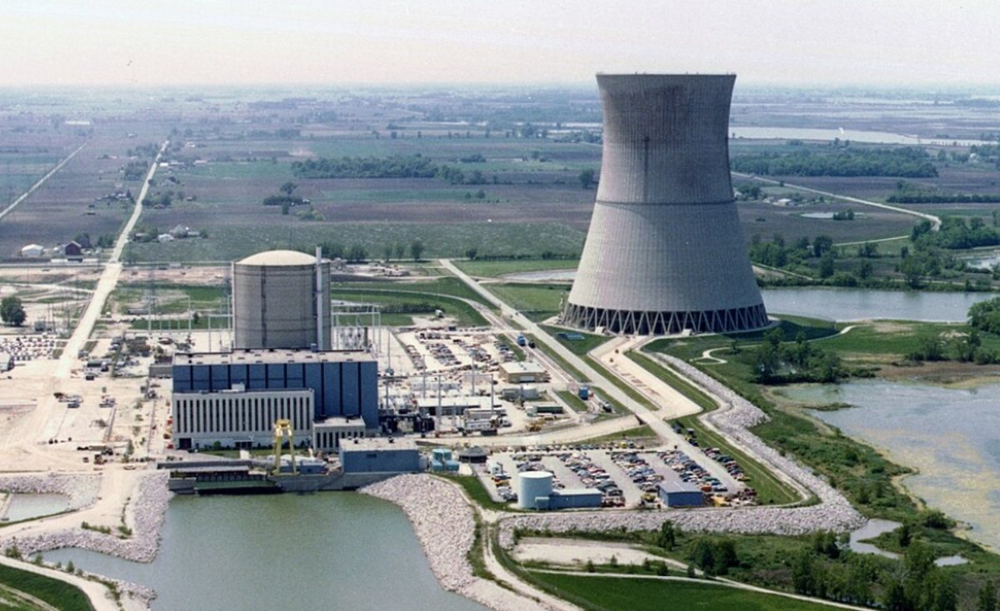
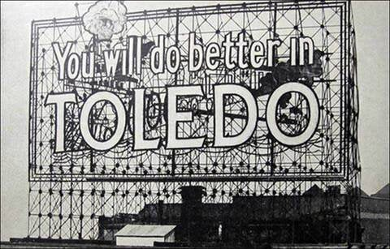
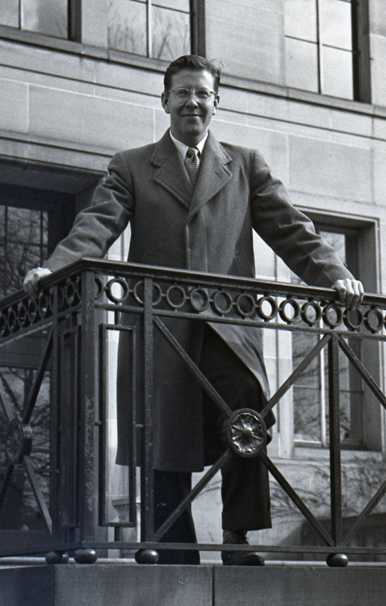
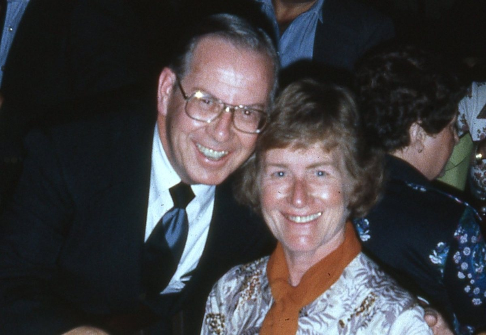
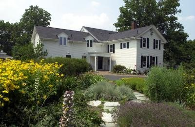
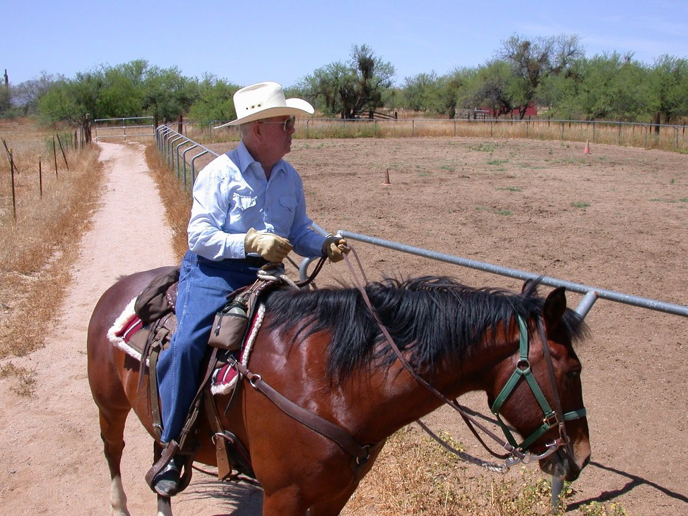
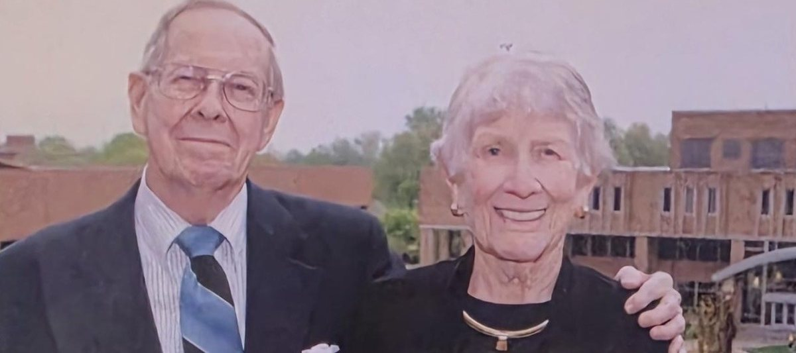

“My mother instilled in me that everyone is obligated to leave the world a better place than when they found it.”
— John Williamson3
At a glance
John P. Williamson was a certified public accountant who joined Toledo Edison in 1951, led the company as president and chief executive from 1972 and as chairman and chief executive from 1979, and retired in 1987 as chairman emeritus. He was at the helm as the Davis-Besse Nuclear Power Station took shape and went into operation, and he proposed the 1980s affiliation with Cleveland Electric Illuminating Company that created Centerior Energy. Away from the office he led Toledo’s Community Chest and United Way campaigns, served on a long list of boards, and chaired the Toledo Development Committee. A 1945 Kent State graduate who worked his way through school, he won the university’s Distinguished Alumnus Award in 1974 and, with his wife, Helen, gave the lead gift for the Williamson Alumni Center.12456
- Born
- Feb. 22, 1922, Cleveland, Ohio2678
- Died
- Oct. 26, 2014, at Parkcliffe Community, Northwood, near Toledo, Ohio; age 92129
- Career
- CPA; Arthur Andersen & Company; Toledo Edison 1951–1987 (president and CEO 1972; chairman and CEO 1979; chairman emeritus 1987)210111
- Education
- Business administration degree, Kent State University, 194551213
- Honors
- Kent State Distinguished Alumnus Award, 197412; Toledo Area Citizen of the Year214; Kentucky Colonel
- Family
- Married Helen (Morgan) Williamson on Aug. 3, 1945510; three sons25
1. At the helm of Toledo Edison
From the ledger to the corner office
John Williamson began his business career as a certified public accountant with Arthur Andersen & Company.2116 He and Helen spent their first six years of married life in Cleveland, then moved to Toledo in 1951 for what became his lifelong career with The Toledo Edison Company.5113 He joined as the company’s very first Director of Systems and Procedures.21110
The climb was steady. He was named secretary and treasurer in 1962,215 and by about 1965 he was vice president of finance, a title that appears beside his name on the advisory committee of Michigan State University’s newly founded Institute of Public Utilities.21610 Three years later he became senior vice president.2107 As the Toledo Blade put it years afterward, “the certified public accountant climbed through the Edison ranks to head the utility.”1
President in 1972, chairman in 1979
In 1972 Williamson succeeded John K. Davis — “the Davis in Davis-Besse,” in the Blade’s phrase — as Toledo Edison’s president, becoming the youngest person to hold that job since the utility was formed in 1921.11710 Seven years later he became chairman of the board and chief executive officer.21018 Federal filings for the Davis-Besse plant list him as president and chief executive officer of Toledo Edison in 1972 and again in 1976,1920 and a Federal Power Commission notice of March 1974 shows him applying for authority to serve as Toledo Edison’s president, chief executive officer and a director, and as a director of the Ohio Valley Electric Corporation.21
Davis-Besse

On Oct. 5, 1972, a fall day of hundreds of balloons and a giant American flag flying 500 feet above the ground, Williamson stood beside Ohio Gov. John J. Gilligan at the topping-off of the 493-foot cooling tower at the Davis-Besse Nuclear Power Station near Oak Harbor. He praised the crew of 1,300 “who put brains and hands to work.”117
The Blade later wrote that he “was at the helm as the nuclear power project got under way, through the startup of Davis-Besse in 1977.”12220
In 1979, after the accident at Three Mile Island, he told shareholders: “I directed, as a matter of caution, that our unit be kept off line until I could be personally satisfied that all was in order.”1
One company, two cities: the road to Centerior
In the spring of 1985, it was Williamson who raised the idea of a merger with Robert M. Ginn, chairman of Cleveland Electric Illuminating Company, over lunch in early May.4 The plan was announced in June 1985, with Williamson, then Toledo Edison’s chairman, named chairman of the new holding company.23424 Explaining the benefits, he said: “Electric rates will be lower than would otherwise be the case and customers will be better assured an adequate and reliable supply of electricity.”23 The Securities and Exchange Commission approved the affiliation in April 1986, creating Centerior Energy Corporation.25
Williamson announced his retirement in 1986, saying he would leave as soon as the affiliation was approved. A year later, in 1987, he retired as chairman emeritus of Toledo Edison and of Centerior Energy.15
A voice for the industry
His peers asked him to lead beyond Toledo Edison. According to his obituary, he chaired the East Central Area Reliability Council,2610 served as president of the Ohio Electric Utility Institute,10 sat on the executive committee of the Edison Electric Institute, chaired the Public Utilities Institute, and chaired the National Electric Security Committee.102 In 1984 his industry peers selected him to serve a three-year term as chairman of the North American Electric Reliability Council, which represents the electric utilities of both the United States and Canada.21027
2. A citizen of Toledo
John Williamson’s obituary says he “felt a deep sense of responsibility to serve the communities of Toledo and surrounding areas.”2 The record bears that out.
Campaigns and clubs

He was chairman of the Greater Toledo Area United Way in 1971 and president of the Toledo Community Chest in 1972.1062 He was a past president of the Toledo Kiwanis Club, past president of the Toledo Area Chamber of Commerce, past chairman of the Ohio Chamber of Commerce, and past vice president of the Toledo Council of the Boy Scouts of America.26 He also served on the board of the Salvation Army and on a City of Toledo board.
Boards and trusteeships
He sat on the boards of the Toledo Symphony Orchestra,3 the Toledo Museum of Art,28 Riverside Hospital, Toledo Hospital, Toledo Trust Company, First National Bank of Toledo,24 the American Red Cross Toledo chapter, Junior Achievement of Northwest Ohio and the Boys Club of Toledo.2 A CPA by training, he was president of the Financial Analysts Society of Toledo in 1968–69.142 In his church life he was a founding elder of Covenant United Presbyterian Church and chairman of the foundation at Epworth United Methodist Church.21024
Music, from Severance Hall to the Toledo Symphony
Music was a lifelong thread. As a schoolboy in Cleveland he took a field trip to Severance Hall to hear the Cleveland Symphony. “It was my first experience with classical music and it was the beginning of my lifelong enjoyment of music,” he recalled.3 In Toledo he served on the Toledo Symphony’s board of trustees for nearly three decades and served as chairman.32 He and Helen also arranged to establish the John P. and Helen M. Williamson Fund at the Toledo Community Foundation to support the symphony’s concerts and programming for children and young people.3
Shaping the city
Williamson was the first chairman of the Toledo Development Committee, created to provide a blueprint for the future development of downtown Toledo and the revitalization of the waterfront.62 The Mayor and City Council gave him a recognition plaque for his leadership.2 His obituary adds that he believed the area along Water Street should remain open so that all of Toledo’s citizens could enjoy views of the Maumee River, that he was instrumental in establishing Promenade Park, and that he spearheaded the campaign to light the Anthony Wayne (Hi-Level) Bridge and the University of Toledo campus.2
For the Centennial of Light (1879–1979), Toledo Edison gave the University of Toledo the Toledo Edison Memorial Fountain, which stands in front of the Student Union; its plaque carries words from Williamson about the light of electricity and the light of knowledge.92
Honors
In 1977 Gov. James A. Rhodes appointed him to Ohio’s Development Advisory Council. He was named Toledo Area Citizen of the Year.214 He was also a Kentucky Colonel.
3. Education: ice, ink and ambition
John Williamson lost his parents at an early age and worked his way through Kent State University. He delivered blocks of ice for food refrigeration and worked in the campus print shop, where he sometimes taught other students how to run the printers.52 He graduated in 1945 with a degree in business administration.512136 According to Prabook’s profile, he later did postgraduate study at the University of Toledo and the University of Michigan in 1956.27116
A campus leader

Classmates knew him as “Johnny.”29 He served as business manager of the Kent Stater (now the Daily Kent Stater) in 1944, and was appointed again by university president George A. Bowman, on the recommendation of the publications committee, for the first half of 1945 — a second term in the job.301329 He was also associate editor of the Chestnut Burr yearbook.3129
As a senior he was president of Blue Key and of the Men’s Union, and was named to the campus Who’s Who.133031 The Stater also lists him in Kappa Mu Kappa fraternity and Delta Sigma Pi, the national business honorary.30
4. A lifelong Golden Flash
Distinguished Alumnus, 1974

In 1974 Kent State gave Williamson its Distinguished Alumnus Award.1252 The Alumni Association describes its top alumni honor as one that recognizes outstanding contributions in a chosen profession and extraordinary service to the university, the community, the state, the nation and the world.32 He and Helen became the first life members of the Kent State University Alumni Association in 1975.
The Williamson Alumni Center

“We had the idea to use the president’s home to attract graduates from all over,” Williamson said in a 2011 interview. “In my mind [the alumni center] created good will.”5
The home in question was the Curtiss House, built around 1853, which Kent State bought in 1942 and which housed the university’s presidents until 1988, when it was offered to alumni relations.33534 John and Helen gave the lead gift for its renovation; private gifts of $1.6 million funded the work and an addition, and Alumni Association staff moved in during January 1990.335 The addition was built from fall 1991 to summer 1992, and the Williamson Alumni Center was dedicated on Oct. 10, 1992.33355 The Alumni Association has since relocated, but the Williamson House still serves the Kent State community.5
Who’s Who in America (1992–93 edition) lists Williamson as the recipient of a Kent State University medallion in 1992.14 The couple’s planned giving through the Toledo Community Foundation includes future funds to support the Williamson Alumni Center and a scholarship for Kent State students.3
5. Retirement: horses, horizons and home

Retirement suited John Williamson. He and Helen kept homes in Rio Verde, Arizona, and Perrysburg, Ohio, and he enjoyed horseback riding. They traveled the world — Europe, Africa, the Americas and Asia — and he simply enjoyed life.
In 1996 he was qualified to serve as a Stephen Minister at Rio Verde Community Church, a quiet continuation of a lifetime of service.
6. Family and farewell
Roots
John Pritchard Williamson was born on Feb. 22, 1922, in Cleveland, Ohio, to John and Jane (Pritchard) Williamson.2610 He lost his parents at an early age.52 He was preceded in death by his brother, Ivor Williamson, and his sister, Betty Irwin.2
Helen
His favorite Kent State memory, he said in a 2011 interview, was meeting Helen Morgan, a member of Tri Sigma.5 The print shop played a part: when Helen’s sister came in for a lesson, he asked her on a date.5 “We got engaged in college and were married on Aug. 3, 1945.”510 Helen, who majored in home economics, stayed home to care for their three sons and became an active volunteer.5 Their marriage lasted 69 years.2 Helen died on Aug. 5, 2019.536

Farewell
John Williamson died peacefully on Oct. 26, 2014, at Parkcliffe Community in Northwood, at the age of 92.129 A memorial service was planned for Nov. 1, 2014, at Swan Creek Retirement Village, with a private interment at Joy Cemetery in Ottawa Hills.28
John was survived by his wife of 69 years, Helen, who died Aug. 5, 2019.2536 His obituary also named his sons, John M. (Karol) Williamson, James R. Williamson and Wayne A. (Kathy) Williamson; his grandson, John R. Williamson, and great-grandson, John D. Williamson; and family members Christopher (Kim) Seitz, Lisa (Greg) Bowling, Laura (Tom) Baird and Jamison (Amanda) Adams.2
Kent State’s own tribute said it plainly: John and Helen “will always be remembered for their dedication to Kent State and for creating a home for Golden Flash alumni.”5
Sources
- Blade Staff (Mark Zaborney and Mark Reiter), “John Williamson: 1922-2014; Hard work led man to the top position at Toledo Edison,” The Blade (Toledo), Oct. 28, 2014. https://www.toledoblade.com/news/deaths/2014/10/28/John-Williamson-1922-2014-Hard-work-led-man-to-the-top-position-at-Toledo-Edison/stories/20141027201
- “John Williamson Obituary,” family-written obituary, The Blade (Toledo) via Legacy.com, published Oct. 28, 2014. https://www.legacy.com/us/obituaries/toledoblade/name/john-williamson-obituary?id=21224379
- Toledo Community Foundation, “Williamson’s Donor Story” (page undated; accessed Oct. 26, 2026; the original page has since moved). http://www.toledocf.org/donor-stories/williamson-s-donor-story/
- “Business People; Ohio Utilities’ Merger Enhances Two Careers,” The New York Times, June 27, 1985, p. D2. https://nyti.ms/29wxHoe
- Ashley Whaley, “Alumni Life: Love Story and Legacy — A tribute to John and Helen Williamson,” Kent State Magazine, Kent State University, posted Mar. 22, 2020. https://www.kent.edu/magazine/news/alumni-life-10 [archived copy]
- Who’s Who in Finance and Industry, 1975–76 edition, entry “Williamson, John Pritchard, utility exec.” (Marquis Who’s Who), via Internet Archive full-text search. https://archive.org/details/whoswhoinfinance7576unse_ed19
- World Who’s Who in Finance and Industry, 1969 edition, entry “Williamson, John Pritchard, utility exec.” and Toledo Edison Co. executive roster (“sr. v.p.”) (Marquis Who’s Who), via Internet Archive full-text search. https://archive.org/details/worldwhoswhoinfi0000unse
- “John Pritchard Williamson (1922–2014),” Find a Grave memorial 224691877. https://www.findagrave.com/memorial/224691877/john-pritchard-williamson [archived copy]
- “Class Notes/Obits,” University of Toledo Alumni eMagazine, Jan. 29, 2015. https://alumninewsarchive.utoledo.edu/2015/01/29/class-notesobits-10/ [archived copy]
- Who’s Who in the Midwest, 1996–1997 edition, entry for John Pritchard Williamson (Marquis Who’s Who), via Internet Archive full-text search. https://archive.org/details/whoswhoinmidwest0000unse
- “Accounting Developments Service Committee” (Chairman John P. Williamson, The Toledo Edison Co.), Edison Electric Institute Bulletin, vol. 26, no. 10, Nov. 1958; Internet Archive, Serials in Microfilm. https://archive.org/details/sim_edison-electric-institute-eei-bulletin_1958-11_26_10
- Kent State University, “Past Alumni Award Recipients” (Distinguished Alumnus Award, established 1958; entry “1974 – Mr. John P. Williamson, ’45”). https://www.kent.edu/alumni-and-giving/past-alumni-award-recipients
- Chestnut Burr (Kent State University yearbook), 1945, senior pages and class history; Kent State University Libraries via Internet Archive. https://archive.org/details/chestnutburr1945kent
- Who’s Who in America, 1992–1993 edition, entry for John Pritchard Williamson (Marquis Who’s Who, New Providence, N.J.), via Internet Archive full-text search. https://archive.org/details/whoswhoiname199202newp
- Who’s Who in America, 1982–1983 edition, entry for John Pritchard Williamson (Marquis Who’s Who; “sec., 1960-62, sec.-treas., 1962-65” at The Toledo Edison Company), via Internet Archive full-text search. https://archive.org/details/whoswhoinamerica00chic
- Michigan State University, Graduate School of Business Administration, Division of Research, Institute of Public Utilities brochure (c. 1965–66; Advisory Committee page lists “John P. Williamson, Vice President of Finance, The Toledo Edison Company, Toledo, Ohio”). Printed document, no web link. [archived copy]
- University of Toledo, Ward M. Canaday Center for Special Collections, Guide to the John Davis Papers (MSS-338), finding aid. https://www.utoledo.edu/library/canaday/collections/findingaids1/MSS-338_AS.pdf [archived copy]
- Toledo Edison Company, “Bay Shore Recognition Day,” Public Relations Society of America Silver Anvil award entry (c. 1980; refers to “Toledo Edison chairman and chief executive officer John P. Williamson”); CIA Reading Room copy CIA-RDP85B01152R000600780073-9 via Internet Archive. https://archive.org/details/cia-readingroom-document-cia-rdp85b01152r000600780073-9 [archived copy]
- U.S. Nuclear Regulatory Commission (ADAMS ML19329B578), “Amendment 14 to Application for Operating License,” Davis-Besse Nuclear Power Station Unit 1, The Toledo Edison Company and The Cleveland Electric Illuminating Company, Docket No. 50-346, Dec. 8, 1972 (officers list: John P. Williamson, President and Chief Executive Officer). https://www.nrc.gov/docs/ML1932/ML19329B578.pdf
- U.S. Nuclear Regulatory Commission (ADAMS ML20008D686), Application for Licenses, Davis-Besse Nuclear Power Station Unit 1, The Toledo Edison Company and The Cleveland Electric Illuminating Company, Docket No. 50-346, dated Dec. 8, 1972 and revised Dec. 16, 1976 (directors and officers: John P. Williamson, President and Chief Executive Officer, The Toledo Edison Company). https://www.nrc.gov/docs/ML2000/ML20008D686.pdf
- Federal Power Commission, “Williamson, John P.” (Docket No. ID-1724), Notice of Application, dated Mar. 5, 1974, Federal Register, vol. 39, no. 49 (Mar. 12, 1974), p. 9581 (application under Federal Power Act §305(b) for authority to hold the positions of President and Chief Executive Officer and Director, The Toledo Edison Company, and Director, Ohio Valley Electric Corporation). https://www.govinfo.gov/content/pkg/FR-1974-03-12/pdf/FR-1974-03-12.pdf [archived copy]
- World Nuclear Association, Nuclear Reactor Database, “Davis Besse 1” (IAEA PRIS data: first criticality Aug. 12, 1977; first grid connection Aug. 28, 1977). https://world-nuclear.org/nuclear-reactor-database/details/Davis-Besse-1
- Letter from Harry H. Glasspiegel, counsel for applicants, to the Atomic Safety and Licensing Board, July 10, 1985, enclosing The Cleveland Electric Illuminating Company press release of June 25, 1985, announcing the agreement with The Toledo Edison Company to combine under a new holding company; U.S. Nuclear Regulatory Commission, Perry Nuclear Power Plant Units 1 and 2, Docket Nos. 50-440 and 50-441 (ADAMS ML20128R117). https://www.nrc.gov/docs/ML2012/ML20128R117.pdf
- Who’s Who in the Midwest, 1988–1989 edition (Toledo Hospital, 1984–86) and 2013 edition (chairman, First National Bank of Toledo, 1974–75; Toledo Trust Co.; founding chairman, Centerior Energy, 1985–86), entry for John Pritchard Williamson (Marquis Who’s Who), via Internet Archive full-text search. https://archive.org/details/whoswhoinmidwest0000alis
- “SEC approves merger of Cleveland Electric and Toledo Edison,” United Press International, Apr. 18, 1986. https://www.upi.com/Archives/1986/04/18/SEC-approves-merger-of-Cleveland-Electric-and-Toledo-Edison/3026514184400/
- North American Electric Reliability Council, Annual Report 1981 (statement signed “John P. Williamson, Chairman, ECAR”); GPO microfiche scan via Internet Archive. https://archive.org/details/micro_IA40706907_0293
- “John Pritchard Williamson (born February 22, 1922), American utilities executive,” Prabook (aggregator profile). https://prabook.com/web/john_pritchard.williamson/1374888
- Toledo Museum of Art, Annual Report 1989–90, Board of Trustees (General Trustees include John P. Williamson); Internet Archive. https://archive.org/details/tma-1989-90-annual-report
- Chestnut Burr (Kent State University yearbook), 1944; Kent State University Libraries via Internet Archive. https://archive.org/details/chestnutburr1944kent [archived copy]
- “Piotter, Williamson Named To Stater Positions,” Kent Stater, Kent State University, Jan. 26, 1945, p. 1 (Daily Kent Stater Digital Archive). https://dks.library.kent.edu/?a=d&d=tks19450126-01
- Kent Stater, Kent State University, Dec. 12, 1944, student Who’s Who item (Daily Kent Stater Digital Archive, item tks19441212-01.2.2). https://dks.library.kent.edu/?a=d&d=tks19441212-01.2.2
- Kent State University Alumni Association, “Alumni Award Categories” (description of the Distinguished Alumni Award). https://www.kent.edu/alumni-and-giving/alumni-award-categories [archived copy]
- Kent State University Alumni Association, “Williamson Alumni Center History” (page undated). http://www.ksualumni.com/s/401/social.aspx?sid=401&gid=1&pgid=2136
- Kent State University Alumni, “Mission and History” timeline (1988: renovations begin on the Curtiss House, residence of Kent State presidents since the 1940s, to become the Williamson Alumni Center). https://www.kent.edu/alumni-and-giving/mission-and-history [archived copy]
- Kent State University Libraries, Special Collections and Archives, Carol A. Cartwright papers finding aid (Series 4, speeches, 1992: “Williamson Alumni Center Dedication: October 10, 1992”). https://www.library.kent.edu/special-collections-and-archives/carol-cartwright-papers-ksu-president [archived copy]
- “Helen Williamson Obituary (1924–2019),” family-written obituary, The Blade (Toledo) via Legacy.com, published Aug. 10–12, 2019. https://www.legacy.com/us/obituaries/toledoblade/name/helen-williamson-obituary?id=1796802
Photo credits
- Main portrait: John P. Williamson. Photo: The Blade (Toledo Blade).
- Couple photo: John and Helen Williamson. Photo by Bob Christy ’95, Kent State University Alumni Association.